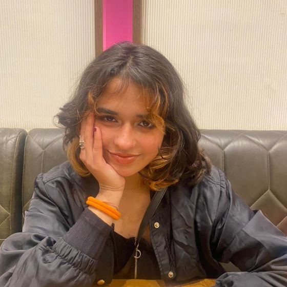

📞 +91 8178463987 | 📧 kashish.chikara@nift.ac.in | 🎨 Portfolio
NIFT – B.Des in Fashion Communication | CGPA: 8.8
Lotus Valley International School – 12th: 92.6% | 10th: 90.4%
Satwaa (Brand) – Branding Intern (July 2024)
Developed brand identity and content for 150+ product launches.
Rajdeep Ranawat – Styling Assistant (July 2024)
Helped style 25+ curated looks and prepare wardrobe selections.
Paliwal Real Estate – Marketing Intern (June 2024)
Promoted events like SMAAASH Carnival & Sip and Paint; assisted in planning & performance tracking.
Sokai – Styling Assistant (June 2024)
Handled fittings, continuity, and wardrobe during shoots.
✅ Google UX Design Professional Certificate (2025)
Covered User Research, Wireframing, Prototyping, and Testing.